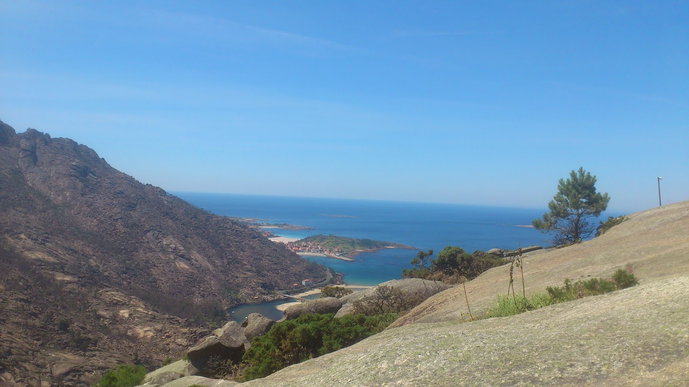
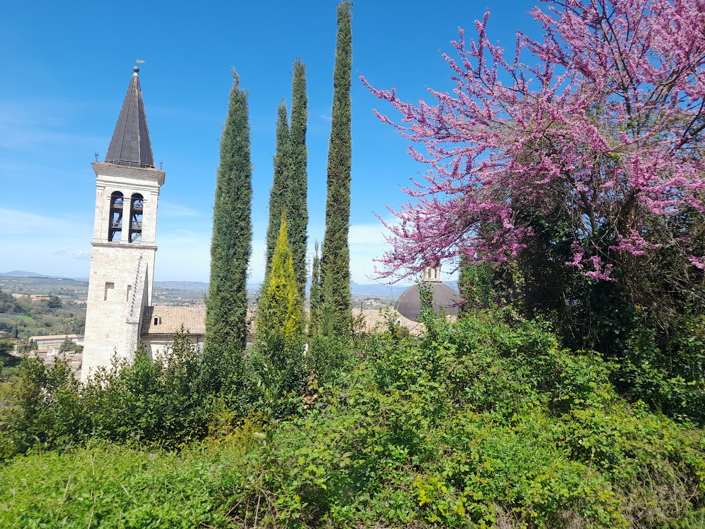

+34 634 75 04 00
+34 634 75 04 00
Wir sprechen Ihre Sprache: Wir sprechen deutsch 🇩🇪/ on parle français 🇫🇷/ hablamos español 🇪🇸/ we speak english 🇺🇲/ parliamo italiano 🇮🇹 e otros idiomas!
Wir arbeiten noch an unserer Webseite
Unsere zukünftige Website: micamitravels.com
Unsere Philosophie
MICAMI ist ein unabhängiger Reiseveranstalter, dass sich auf den Jakobsweg in Spanien, Portugal und Frankreich und andere Routen und Wanderwege spezialisiert hat. Entdecken Sie unsere Caminos.
MICAMI arbeitet direkt mit den Pilgern zusammen, ohne Vermittler und doppelte Provisionen, und bietet so Qualität, menschliche Nähe und direkte Unterstützung.
Wir haben uns dem „slow“ Reisen verschrieben und arbeiten direkt mit lokalen Unterkünften, Transportunternehmen und Restaurants zusammen. Viele von ihnen sind kleine, familiengeführte Unternehmen. Wir kümmern uns umeinander, um Qualität und Herzlichkeit zu geben.
Unsere Pilger sind unsere zukünftigen Freunde, denen wir die besten Erfahrungen auf ihrem Jakobsweg bieten wollen, ohne ihm die Hauptrolle abzunehmen (jeder muss natürlich seinen eigenen Weg gehen).
Hab keine Angst, dich auf dieses Abenteuer einzulassen: In MICAMI werden wir „dein Camino-Engel“ sein, der erscheint, wenn DU ihn brauchst.

In MICAMI
Würden wir uns freuen, dich in diesem Abenteuer zu begleiten, Schritt für Schritt deine Zweifel und Ängste zu klären und am Ende die Freude über das Erreichen des Ziels mit dir zu teilen.
Wir helfen dir bei der Planung der Route, die geeigneten Etappen, der freien Tage zum Ausruhen oder um das kulturelle Angebot zu nutzen.
Wir buchen Unterkünfte, kümmern uns um die Verpflegung, Transfers am Zielort (wir buchen keine Flüge), organisieren Gepäcktransport.
Wir stehen dir während die Reise telefonisch zur Seite, beantworten die Fragen und begleiten dich, damit dieses Abenteuer zu einer TOLLEN Erfahrung wird.


Und warum MICAMI?

Wir sind Pilger, wir stecken in der Haut des Wanderers, der den Rucksack nimmt und JEDES JAHR die alten und neuen Wege geht .
Wir arbeiten seit mehr als 10 Jahren auf dem Jakobsweg, machen Reservierungen, arbeiten als Reiseleiter, geben logistische und psychologische Unterstützung für Pilger während des Caminos.
Wir haben viele Gruppen in Spanien, Portugal, Frankreich und Italien begleitet.
Wir sprechen Ihre Sprache: Wir sprechen deutsch/ on parle français/ hablamos español/ we speak english/ parliamo italiano e otros idiomas!
Welche Routen bieten wir an? Start träumen
-

-

-

-

-

-

-

-

-

Wer ich bin
Liebe Pilgerin, lieber Pilger und Wanderer. Mein Name ist Olesia, oder einfach Oli, wie ich auf dem Jakobsweg genannt werde.
Ich möchte dir gerne meine Geschichte erzählen. Ich muss ehrlich sein: Der Jakobsweg (Camino de Santiago) war keine Liebe auf den ersten Blick. Am Anfang war es Interesse, Neugier, Überraschung und eine große körperliche Herausforderung. Es war mein erster Camino im 2012. Dann war ich eine Pilgerin, später eine Reiseleiterin, dann Managerin für die Reservierungen in einer Agentur, die Ansprechpartnerin für viele Pilger und Wanderer, die Entdeckerin von neuen Wegen. Auf diese Weise habe ich 10 Jahre lang direkt und indirekt hunderte Menschen begleitet und sie in schwierigen Momenten und in der Freude über erfüllte Träume unterstützt.
Heutzutage ist der Jakobsweg ein ziemlich ausgebeutetes Touristenziel, aber keine Sorge: der Camino hat immer noch seinen Zauber, jeden nach seinem Geschmack, seinen Bedürfnissen und seinen Fähigkeiten aufnehmen zu können.
Ich erlebe den Camino jedes Jahr auch wieder persönlich: Ich nehme meinen Rucksack und gehe Schritt für Schritt zurück zum Einfachen, zum Grundlegenden: hin zu Freundlichkeit, Gemeinschaft, der Schönheit der Natur und der jahrtausendealten Architektur, Zufriedenheit nach der Selbstüberwindung, Dankbarkeit für die kleinen Gesten. So bleibe ich in meinem Herzen mit dem Camino verbunden, mit diesem ersten Weg zu Fuß, den ich vor vielen Jahren gemacht habe.
In MICAMI renne ich nicht der Anzahl der Kunden-Pilger hinterher (auch wenn wir uns über die Zahlen fruene), ich ziehe es vor, einige wenige begleiten zu können, aber ihnen Qualität und Nähe zu geben, Zufriedenheit und den Wunsch, mehr zu entdecken: äußerlich und innerlich. Ich würde dich gerne auf deinem Camino begleiten.